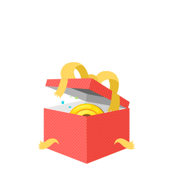

<!--
  Generated template for the ModalSuccessPage page.

  See http://ionicframework.com/docs/components/#navigation for more info on
  Ionic pages and navigation.
-->
<ion-header>

  <ion-navbar>
    <ion-title>Game Result</ion-title>
  </ion-navbar>

</ion-header>


<ion-content padding>
    <ion-grid >
        <ion-row>
          <ion-col style="text-align:center">
            
          </ion-col>
        </ion-row>
        <ion-row>
          <ion-col *ngFor="let block of selectedSrc | slice:0:3;let i = index" style="text-align:center">
           
            
          

        </ion-col>
        </ion-row>
        <ion-row style="text-align:center">
           <ion-col col-2></ion-col>
            <ion-col col-4 *ngFor="let block of selectedSrc | slice:3:5;let i = index" style="text-align:center">
             
              
            
  
          </ion-col>
          <ion-col col-2></ion-col>
    
          </ion-row>
      </ion-grid>
      <button color="dark" (click)="backToTicket(fs)"ion-button full>Confirm</button>
</ion-content>
